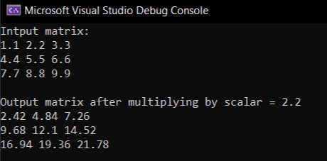

Development of C++ Library for Matrix Calculations.
The "Development of C++ Library for Matrix Calculations" project aims to create a robust, efficient, and versatile C++ library designed specifically for matrix operations. This library will provide essential functionalities for handling matrix calculations, integrity checks, and file operations. The goal is to deliver a high-performance library that can be easily integrated into other C++ projects, supporting developers in implementing complex matrix operations without the need for a graphical user interface (GUI).
Self paced project, work in progress.
Gallery

An example result in console.

Project scope.
See the source code and documentation: